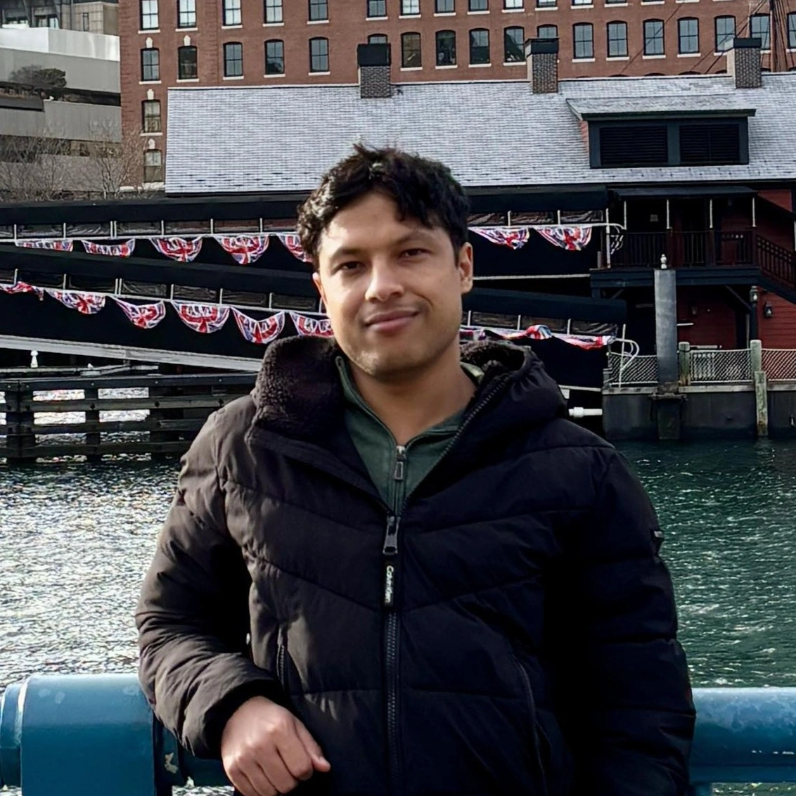

Krishna Panthi light_mode dark_mode
Clemson, SC 29631, USA

Hello there, my name is Krishna Panthi. I'm a graduate student and research assistant at Clemson University. I have a deep passion for learning and problem-solving. I've dabbled in deep reinforcement learning, computer vision, time series analysis, software development, quantum computing, and high-performance computing. What I like the most is writing code and producing results. The best part is I usually don't care about the type of programming language used. I've written code in Python, C#, JavaScript, TypeScript, C++, Java, SQL, Dart, (HTML + CSS), and PHP. That being said, I have most of my experience in Python, C#, JavaScript, (HTML + CSS), and SQL. With all these experiences, I'm confident that I can work with any modern programming language. Additionally, my friends say I've got a good sense of humor.
TL;DR: I enjoy learning, building, and making people laugh.
Reach me out in


💼 Experience
- Developed AquaCrop-Richards, a new crop simulation model that integrates the Richards equation AquaCrop. I wrote a numerical solver for 1-D Richards Equation. It was solved using finite difference method and modified Picard iteration. I also implemented Anderson Acceleration to make it converge in fewer Picard iterations.
- There after, I implemented deep reinforcement learning methods (PPO, DQN, SLBO) to optimize irrigation to obtain maximum profit using the AquaCrop-Richards as the learning environment.
- I was involved in implementation of HydroQuantum library to do quantumm machine learning on hydrology related data. The associated paper has been published on Environment Modeling and Software Journal.
- I also created the workshop materials that were presented in WaterSoftHack 2025.
- I was involved in development of the marking and sales platforms that were used for communication with the users. I also developed algorithms for matching the users with the appropriate consignments.
- I implemented tools to track emails using pixel tracking.
- I was involved in containerization of the pre-built applications for faster deployment. Hence, I've extensive experience with Docker.
- I got experience with multitude of technologies such as AWS, GraphQL, Mixpanel, .NET, Vue.js, Vuetify, etc.
- I was involved in development of PensionPro web. Worked as a full stack developer to migrate features from PensionPro desktop application to PensionPro web application.
- Worked to build frontend components with Angular and its' material design framework.
- On the backend side, I was involved in developing API endpoints, optimizing stored procedures on MS SQL Server, logging, etc.